Quiet Power,
New Texture
SS27 + Fall 26 and the two-year creative trajectory of Phoebe Philo, The Row, Toteme and Raey.
Four brands.
Four different
systems.
A quiet, modular and image-led study of contemporary wardrobe building.
The shared move is not toward louder minimalism. It is toward lived-in authority: imperfect surfaces, private presentations, recognisable wardrobe codes and a refusal of novelty for novelty’s sake.
Texture replaces spectacle
Antique lace, washed leather, raw edges, wrinkling, tactile knits and deliberately “off” finishes bring emotion into restrained wardrobes.
Privacy becomes positioning
Showroom appointments, phone bans and delayed imagery turn attention into a scarce resource—and make the clothes feel discovered rather than broadcast.
Continuity is the product
The promise is not reinvention every six months, but a wardrobe that accrues meaning. Bags, outerwear and signature trousers anchor the business.
Season status, as verified on 19 Oct 2026
Important: “not located” means absent from the brand’s runway pages and leading runway archives at the research cut-off—not proof that no commercial product will be released.
Ease, with a knife edge
The familiar Philo contradiction sharpens: masculine dress codes become fluid, while softness acquires severity.
The core is intentionally low-key—shirts, topcoats, pyjamas, carpenter denim—punctured by loaded gestures: a lipstick-red tube dress, naked backs, a giant calico train. Vogue reads this as “evolving continuity”; WWD is cooler, noting the collection breaks little new ground. Both readings matter.
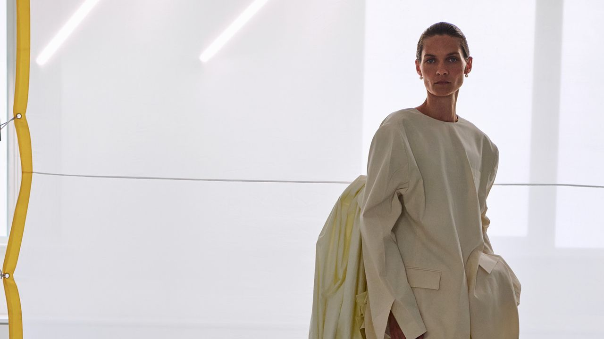
Phoebe Philo Collection F / Spring 2027. Image: Phoebe Philo, via Vogue. Open source ↗
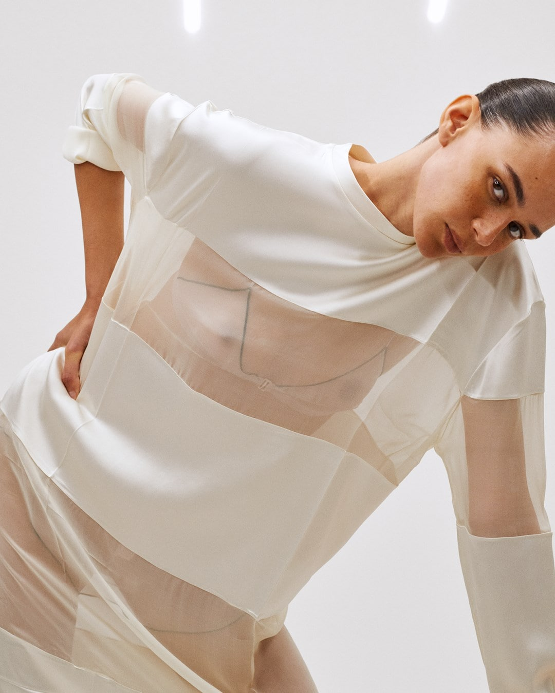
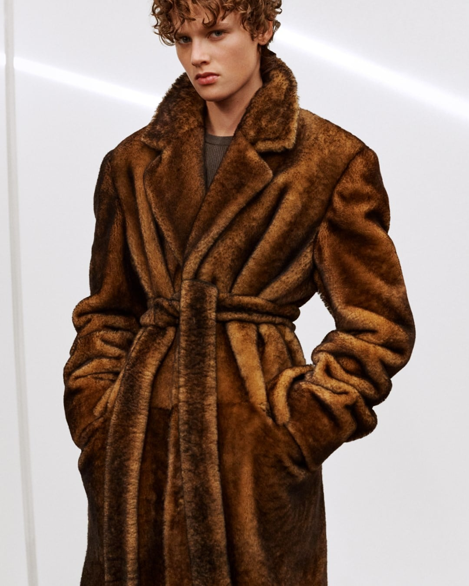
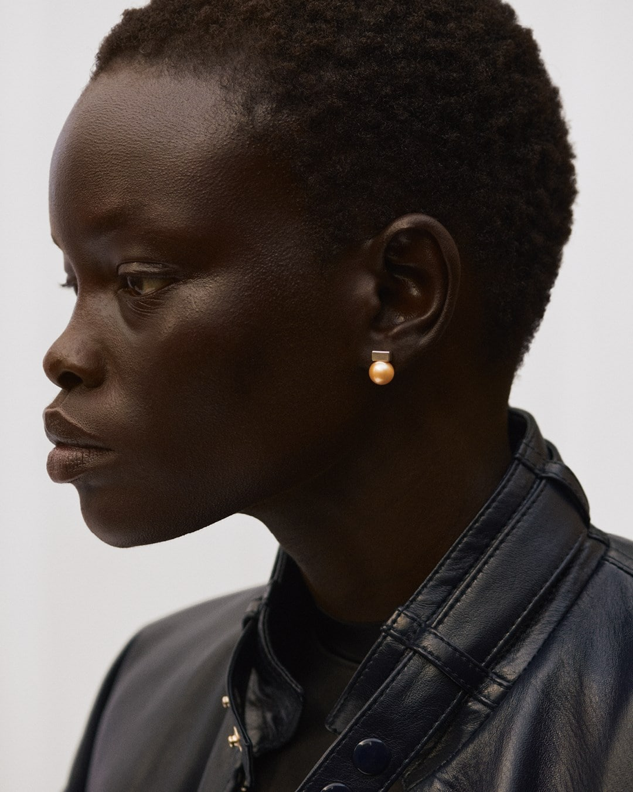
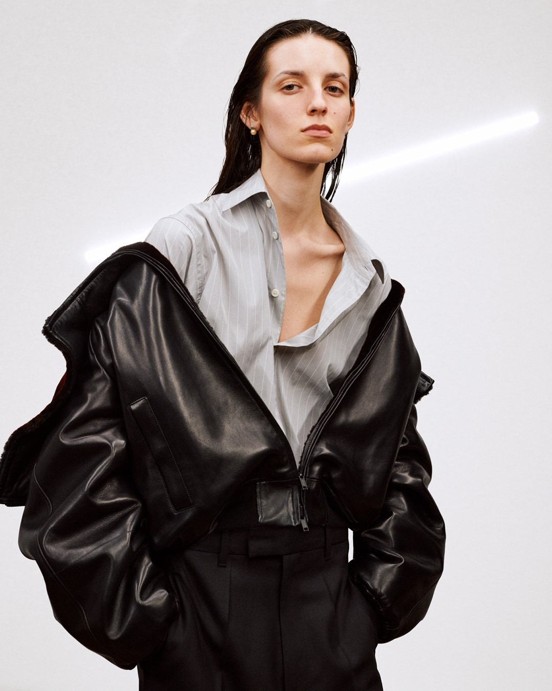
Collection E / Fall 2026. Images: Phoebe Philo, via AnOther. Open source ↗
Anti-occasion eveningwear
Luxury fabrics are demoted into tracksuits, pyjamas, army-like T-shirts and elongated slips.
AnOther’s strongest observation is that the evening proposition is “down-at-heel” precisely when the wider red carpet is over-produced. Leather waders, a tuxedo trouser dragging a boned train and transparent “barcode” panels turn utility into provocation.
Direction: intelligent disobedience.
Palette: petroleum blue, acid yellow and dried-blood red.
A system of controlled release
Post-launch identity consolidates around episodic “edits”, editorial image-making and direct customer attention.
Selective wholesale expansion adds physical discovery; filings signal strong momentum and retention.
Collection E refines the clash between everyday clothes and surreal evening propositions.
Collection F previewed under embargo—press access itself becomes choreography.
Public imagery confirms a calmer, wardrobe-led cycle with strategic flashes of theatre.
Philo’s real innovation is temporal: she makes the market wait, then gives it clothes that look as if they have already been lived in.
Heirloom
bohemia
Antique table linens, Victorian lace, tapestry ribbon and beads disturb the brand’s perfect tailoring.
The key is small-scale craft, not decorative maximalism. Narrow pantsuits and airy raincoats remain the commercial wardrobe havens.
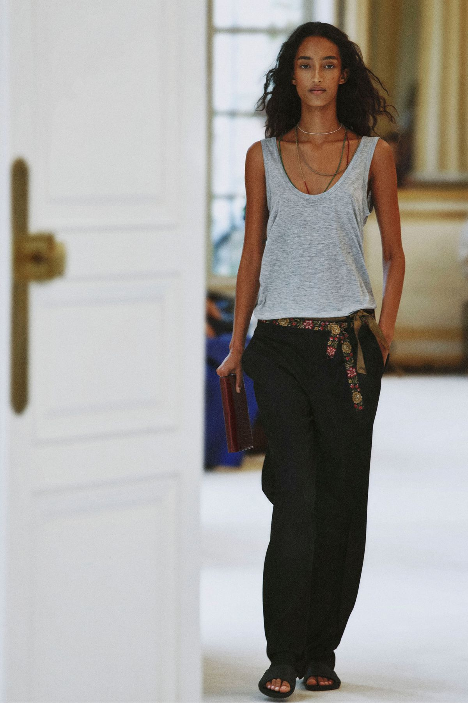
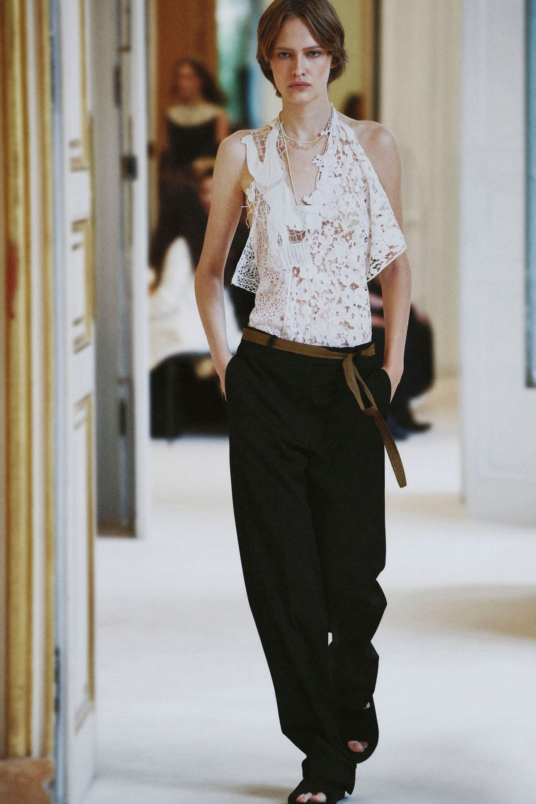
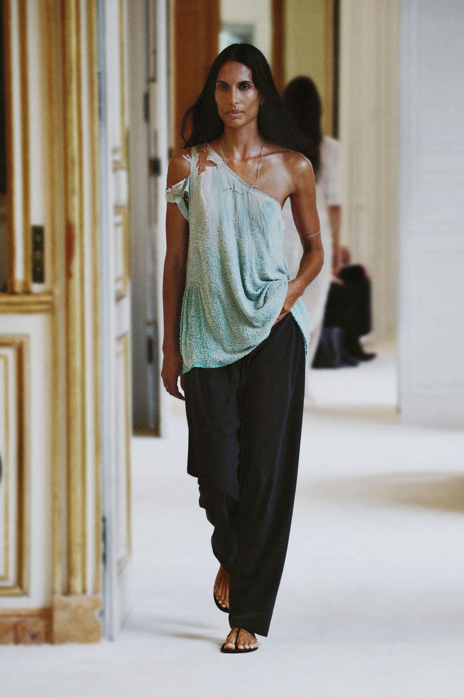
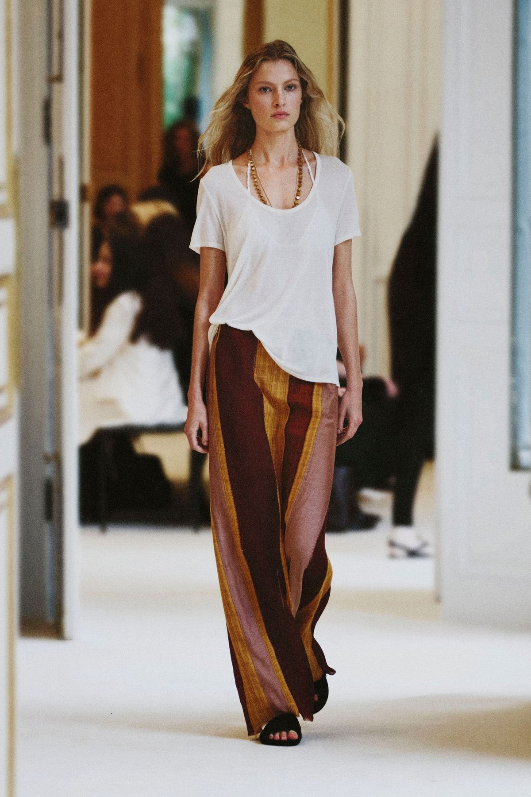
Looks 1, 14, 27 and 39. Images: The Row, via Vogue Runway. Open collection ↗
Imperfection becomes a house code
Soft architecture
Long coats, narrow trousers and fluid dresses are complicated by raw edges, wrinkles, chiffon veiling and irregular craft. The wardrobe is precise; the finish resists preciousness.
Attention, enforced
The phone ban—and in some presentations even the absence of paper—makes looking and remembering part of the product. The show survives as recollection before imagery arrives.
From quiet to cult
Over 2024–26, The Row has moved beyond “quiet luxury” shorthand into a more specific world: reductionist American sportswear, European craft and intentional imperfection.
The Row’s scarcity is not logo scarcity. It is access scarcity.
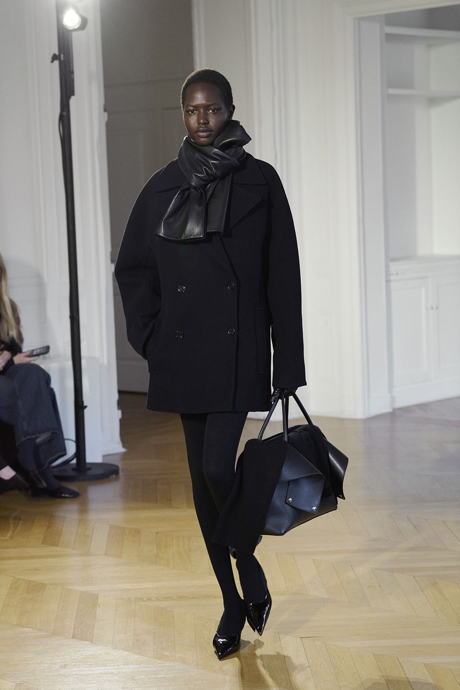
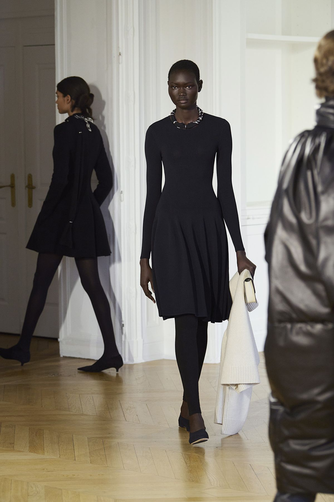
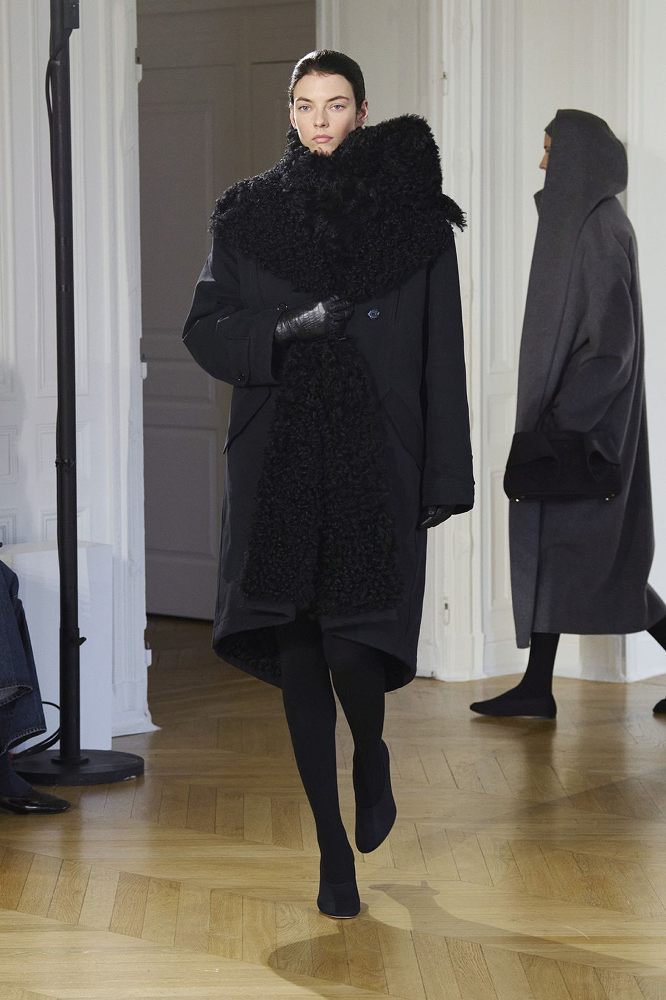
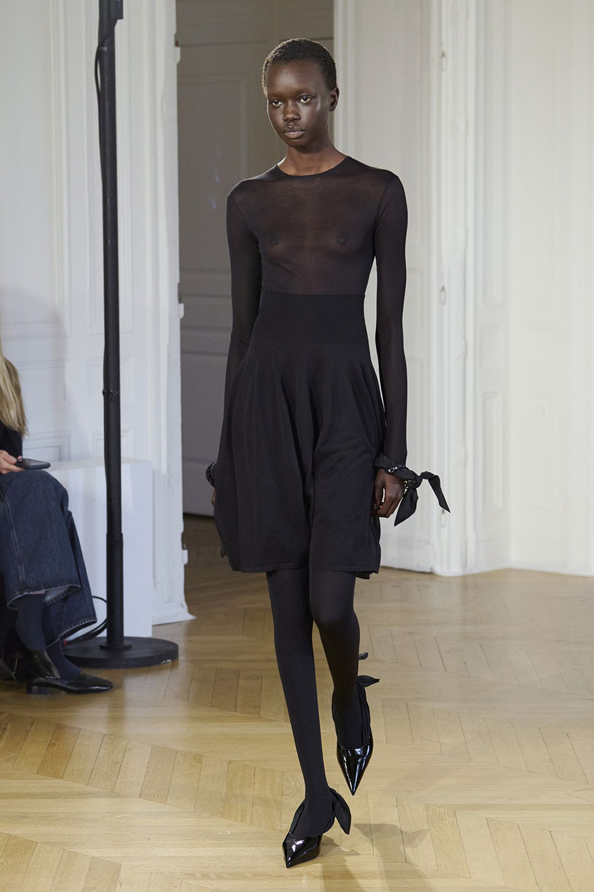
Selected Fall 2026 looks. Images: Toteme, via Vogue Runway. Open collection ↗
Shelter,
not retreat
Softness, shelter and feminine verve replace hard outer structure.
Relaxed silhouettes and tactile textiles are sharpened by scarf-chain jewellery, slingback bows, slim boots and the moto-coded Mercer bag.
Design: ease with an interior mood.
Business: accessories carry more strategic weight.
The missing show is itself a signal
No official SS27 runway page or major-review entry was located by the cut-off date, despite the brand publishing FW26 extensively.
That does not imply inactivity: autumn campaign imagery and product communication continued. But it does suggest Toteme is willing to step in and out of runway spectacle, consistent with a brand that treats shows as selective brand-building moments rather than a mandatory twice-yearly machine.
“Rowification” benchmark
Vogue calls Toteme a beacon of disciplined minimalism—accessible relative to ultra-luxury, rooted in how women actually live.
Undone beauty
Raw edges, crinkling and washed leather loosen the polish. Camilla Nickerson’s styling elevates how pieces are worn into a brand asset.
House-building
Paris intimacy, growing accessories and retail expansion shift Toteme from cult uniform toward a fully articulated global house.
Not a show story.
A brand survival story.
Raey stopped trading with Matches in 2024. There are no Fall 26 or SS27 collections to review.
The relevant creative news is twofold. First, the design language survives through former creative director Rachael Proud’s move to Dagmar: generous proportions, menswear fabrics, product-first thinking and clothes calibrated to real life. Second, Matches and the Raey IP were acquired by Hulcan, with a relaunch announced for 2027 under a new business model.
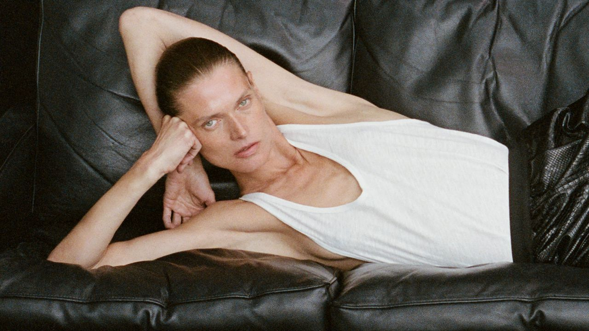
Rachael Proud’s post-Raey design continuity at Dagmar. Image: Dagmar, via British Vogue. Open source ↗
Raey’s strongest asset was never a runway image. It was a very specific understanding of how women want clothes to behave.
Generous proportion
Oversized tailoring and outerwear that feel assertive, never costume-like.
Fabric over theme
Menswear cloths, cashmere, denim and tactile restraint; product decisions ahead of grand narratives.
Everyday calibration
School run, meeting, drinks, travel: “never too much or never too little.”
Relaunch watchpoint: whether new ownership revives Raey as a distinct house with design authority, or mainly as commercial IP attached to the Matches return.
Same climate, different answer
Five signals
for 2027
01. Heirloom craft entering minimalist wardrobes without becoming nostalgia.
02. Show privacy as luxury theatre—and the backlash if it feels gimmicky.
03. Accessories carrying growth while ready-to-wear carries authority.
04. Wardrobe continuity replacing seasonal disruption as the loyalty engine.
05. Raey’s relaunch: creative resurrection or IP monetisation?
Runway & collection reporting
Business, legacy & direction
Images are reproduced for private research/criticism with source credit. All trademarks and imagery remain the property of their respective owners.